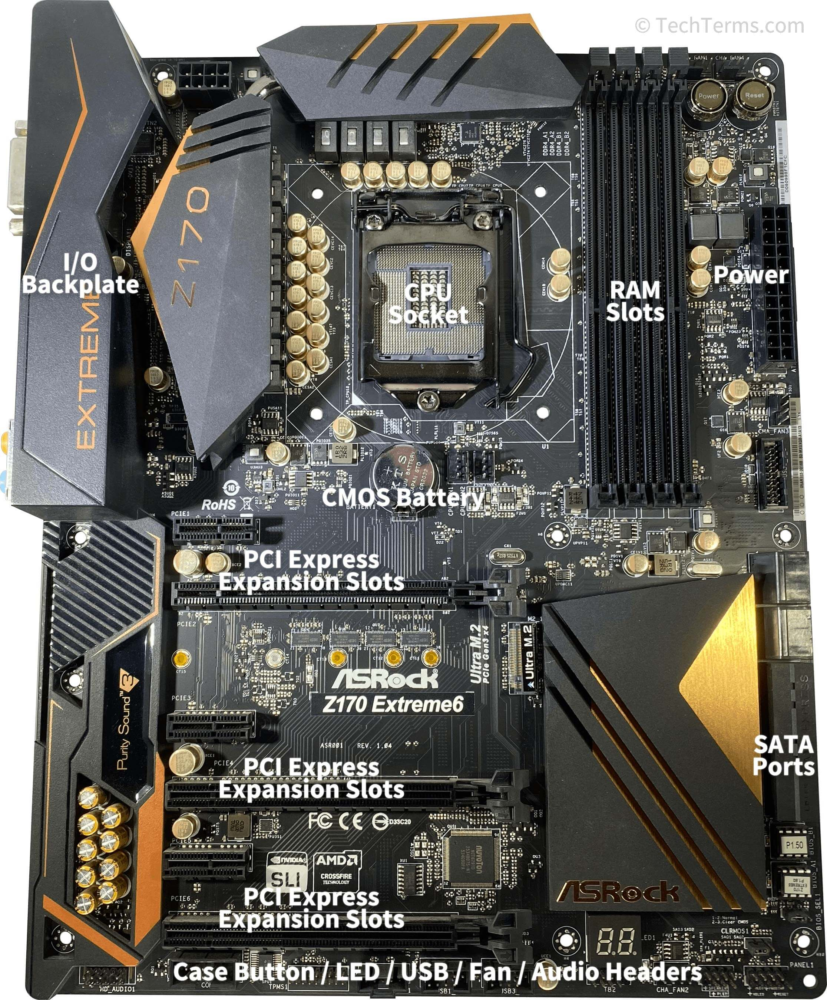

Tech & Gaming Era
Dive into my experiences with tech and gaming, from building PCs to exploring the gaming world with friends and streamers.

Tech Exploration
My interest in tech began with a computer engineering class in high school, where I finally understood computer components and how they work.
It felt empowering to understand conversations my dad used to have about tech.
However, my excitement waned after realizing the cost of building a PC from scratch.
Rating: 7/10. Tech is fascinating but can be expensive to pursue seriously.
Gaming Introduction
My gaming journey started with a physics class assignment where I had to create a video game. Of course, I made one featuring Messi kicking a soccer ball!
That sparked my interest in gaming and led me to explore more.
Rating: 8/10. A fun and creative outlet that continues to intrigue me.
Streamers & Video Games
My love for gaming grew through watching streamers like Quackity and ElMariana. As a kid, I was obsessed with Vegetta777 and his Minecraft videos,
My friend Charlotte also influenced me by introducing me to her favorite games, inspiring me to get my own on Steam.
I’ve played many games over the years, but Stardew Valley remains my favorite. Gaming is a great hobby, but it’s easy to spend too much time and money on it.
Rating: 7/10. A fantastic escape, but it can take a toll on your back and wallet!